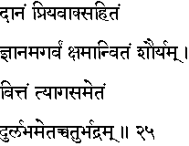
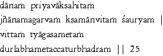

|

|
Verse 25 - Meaning:
A: (In continuation of answer given to earlier verse No 24)
These are gifts (daanam)given with courteous words(priya vaak sahitam), scholarship (jnaanam)without pride (a-garvam), bravery (sauryam)coupled with forgiveness(kshamaanvitam) and wealth (vittam)spent in charity (tyaaga sametam).
These (etat)four (chatur bhadram)are indeed rare.(dur-labham)
|